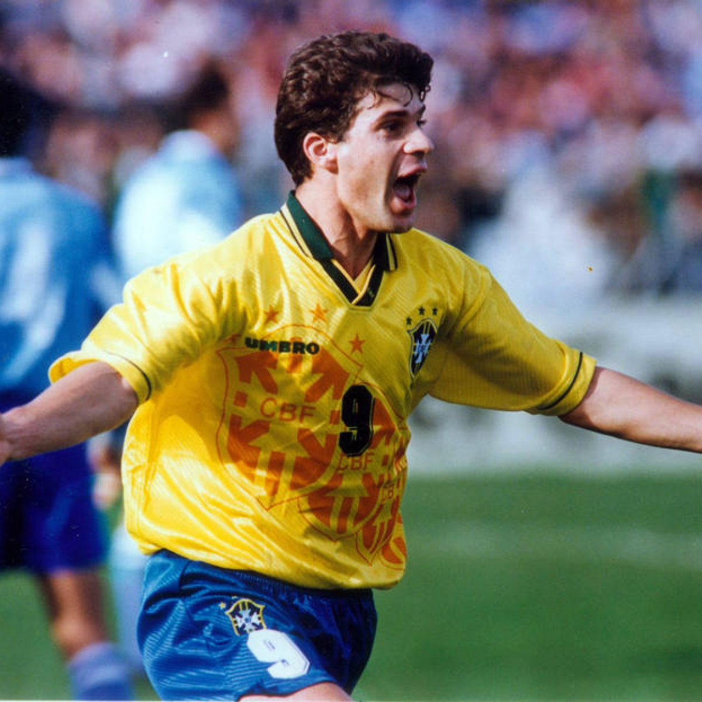
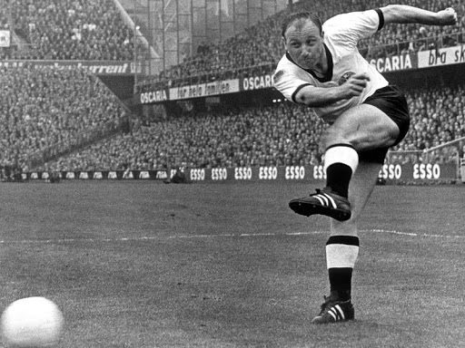
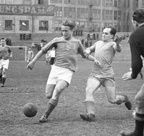
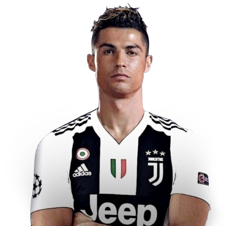
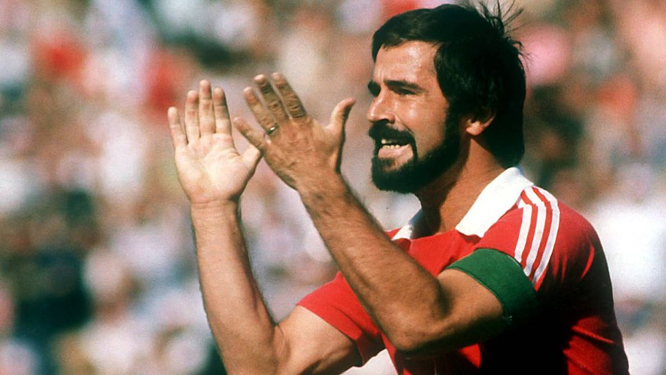
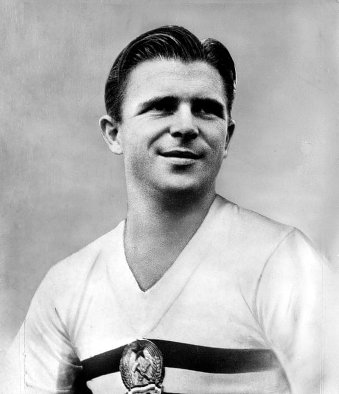
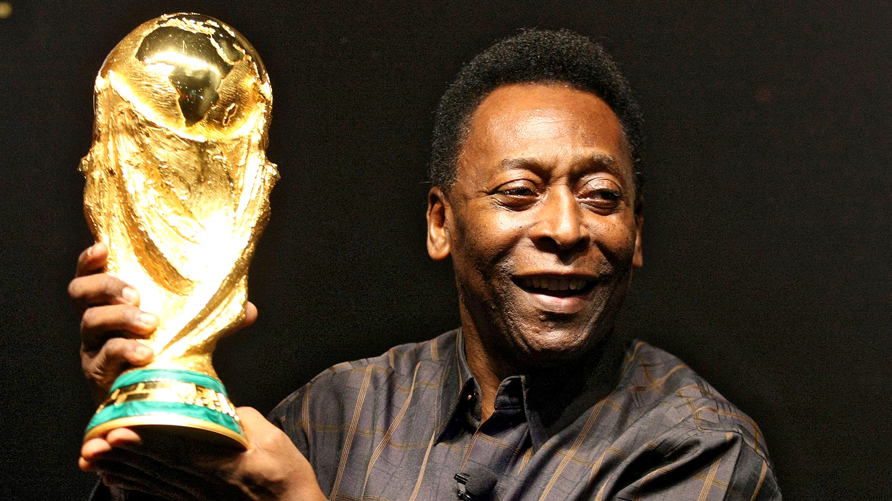
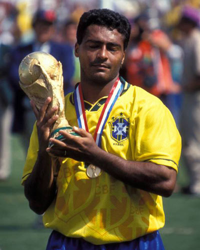
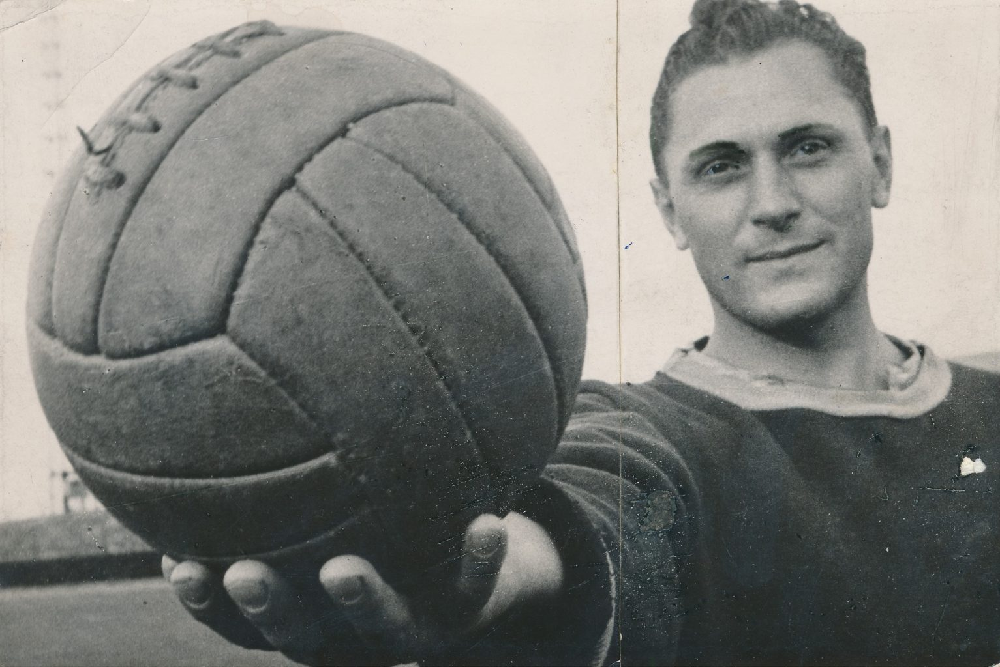

Top 10 highest goalscorers of all time: Lionel Messi and Cristiano Ronaldo among greatest, but this legend has the most
10. Tulio Maravilha 575 goals – 1988-2019
A Brazilian journeyman who certainly had the eye for goal.
Only recently retired, Tulio played for nearly 40 clubs in his career.

9, Uwe Seeler
575+ goals – 1953-1978
The German great was prolific for Hamburger but struggled to turn his goals into silverware.
He scored twice in his one and only appearance for Ireland’s Cork Celtic in 1978.

8. Ferenc Deak
576+ goals – 1940-1957
One of Hungary’s best during their heyday and a legend in his home country if not as much elsewhere in the world.
Incredibly, Deak scored over three goals per game during his career at Szentlorinci AC.

7. Cristiano Ronaldo
725 goals in 1036 games – 2001-present
A modern great for Manchester United, Real Madrid and now Juventus.
CR7 has won everything in the game but still has his eyes set on more.

6. Lionel Messi
730 goals in 911 games – 2003-present
A true one club legend, Messi has won countless awards to go along with his goals at Barcelona.
The Argentine is still going strong and will be looking to overtake a few more names on this list before he retires.

5. Gerd Muller
735 goals in 793 games – 1962-1981
The striker’s most important goal was the winner in the 1974 World Cup final as Germany beat the Netherlands 2-1 in Munich.
Muller is also Bayern Munich’s record goalscorer and has well over double the second best.

4. Ferenc Puskas
746+ goals in 754+ games – 1943-1966
Another Hungarian icon, Puskas now lends his name to the award for the most beautiful goal of each year.
He made his name in Budapest before cementing his legend at Real Madrid.

3. Pele
767 goals in 831 games – 1957-1977
One of the greatest ever and a three-time World Cup winner.
Pele scored nearly a goal-per-game during his 656 competitive games for Santos, though claims to have scored 1000 in his career.

2. Romario
772 goals 994 games – 1985-2007
Romario lead Brazil to World Cup glory in 1994, scoring five goals in the tournament.
He enjoyed a stellar career at a number of top clubs around the world.

1. Josef Bican
805+ goals in 530+ games – 1931-1956
Scoring 395 in 217 games for Slavia Prague, Bican claims the honour as football’s leading goalscorer of all-time.
It is said he scored close to 1,500 goals in total during his playing days.
